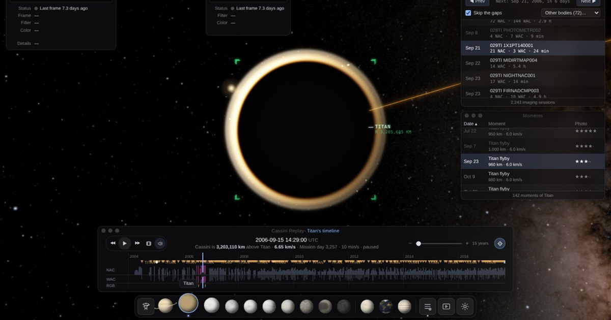

Cassini OS
A replay of the Cassini mission to Saturn, in 3D in your browser, with the pictures the spacecraft took shown at the moment it took them.
Open Cassini OSFree · runs in the browser · needs WebGL
What it is
Cassini OS follows NASA and ESA's Cassini-Huygens spacecraft through its whole mission, from launch in October 1997, past Venus, Earth and Jupiter, through thirteen years in orbit around Saturn, to the Grand Finale plunge into Saturn's atmosphere on 15 September 2017. The spacecraft flies its real path and turns the way it really turned, and a timeline lets you go anywhere in those twenty years.
It looks like a small desktop: the narrow-angle and wide-angle camera windows show the picture Cassini was taking at that moment, from the roughly 443,000 images in the mission's archive. Pictures of the same scene in red, green and blue filters become true color composites, and pictures that tile a moon or the planet become mosaics.
What Cassini saw
- Saturn and its rings: storms, the north polar hexagon, the Great Northern Storm of 2010–2011, equinox, and the rings backlit by the Sun.
- Titan, Saturn's largest moon, over more than a hundred flybys, and the Huygens probe's descent to its surface in January 2005.
- Enceladus and the jets of ice spraying from its south pole.
- The other moons up close: Mimas, Tethys, Dione, Rhea, Iapetus, Hyperion, Phoebe and the small ring moons.
- Jupiter on the way, in December 2000, and the last pictures before the plunge.
Moments to start with
- Jupiter portrait · the color mosaic of the whole planet
- Fountains of Enceladus · the backlit jets from the south pole
- In Saturn's Shadow · Saturn eclipsing the Sun, the rings lit from behind
- The Day the Earth Smiled · Earth a pale dot below the rings
- The last pictures · the day before the plunge
How the pictures are made
Every picture starts as a raw frame from NASA's Planetary Data System. Each is calibrated, repeat exposures are stacked, color sets are aligned and combined, and the spacecraft's position and pointing come from the mission's SPICE navigation data, so the pictures sit where the cameras were really looking. Nothing is painted in.
Using it
Play the mission at any speed, jump between Moments and Highlights, open a body's view to see only its pictures, or play a stretch of pictures as a film. The address bar always holds the moment on screen, so a link opens on the same picture. It works best on a desktop browser and is usable on a phone.